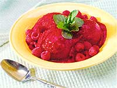
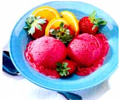

Once upon a time, an ice cream cone cost only ten cents. You could walk into a drug store with your ice-cream-loving dad and have a seat at the soda fountain.
It didn't take long to decide; the only flavors available were vanilla, chocolate, and orange sherbet in one of those Styrofoam cones. On those hot summer nights, the only problem was licking the ice cream before it melted all over your hand. Then the "31 flavors" chain came on the scene. That was heaven, but the dilemma was making up one's mind, staring endlessly into the glass cases while the mint-chocolate-chip dad waited impatiently. No one felt even a tinge of guilt devouring such a high-fat, sugary, additive-Filled treat. No one knew about such things; ignorance was bliss.
Fast-forward to the '90s. (I didn't say that was my memory. That would make me too old.) Supermarket aisles are filled with designer ice creams and sorbets. Frozen yogurt stands can be found in bizarre places such as airports. Upscale coffee shops and book stores feature granitas. It's just too much. Life was so uncomplicated and tranquil when there were only three flavors. If you can stand just two more flavors, here are some frozen treats that won't cause even a tinge of guilt (now that we know better).
Homemade ice creams are a great way to use up ripened summer fruit. An ice cream maker is good to have because it's faster and easier but all you really need is a blender and a freezer to beat the heat. Homemade ice cream is softer than commercial ice cream, so don't expect it to get very firm. It should be just hard enough to scoop. In fact, it tastes best a little mushy because once ice crystals are formed, some of the texture and flavor is gone. After the ice cram is done, it's best to eat it within two hours. Otherwise, remove it from the freezer about 15 minutes before eating to let it thaw. Mush it around a bit and it's ready to eat. Get those cones ready...
George Washington had one of the first ice cream machines in this country. Hopefully yours is technologically superior to his. If you have a recent ice cream maker, it's probably the kind that requires you to freeze a metal canister before making ice cream. This requires you to plan ahead by placing the canister in the deep freeze or the coldest part of your refrigerator's freezer at least 24 hours in advance. The ice cream mixture will need to be very cold before pouring it into the canister. Otherwise, follow the instruction booklet.
You guessed it. You're the machine.
Pick out a shallow baking pan or plastic container such as a 9-by-9-inch cake pan. It needs to have enough room to whisk the ice cream. Arrange the food in your freezer so there's a flat spot for the pan. Pour the ice cream mixture into the pan and place carefully in the freezer. Cover the pan with foil or plastic wrap.
Set the timer for 30 minutes. After the timer goes off, remove the pan from the freezer. Using a wire whisk, beat the ice cream until the frozen pieces are mixed into the mushy stuff. Return the pan to the freezer and set the timer again for 30 minutes. Repeat this process 3 to 5 times, depending on the temperature of your freezer. What happens if you forget about it for 12 hours? It'll be rock hard. Break it into chunks and pulse it in the food processor to make it creamy again.
1/2 cup barley-malt-sweetened chocolate chips or regular chocolate chips
2 tablespoons vanilla soy milk
1 teaspoon maple syrup
In a small saucepan, heat the chow late chips over low heat, stirring often so they don't bum. When the chips are just melted, add the soy milk and stir until smooth. You may need to add more soy milk if the sauce is too thick. Taste to see if the sauce needs sweetening, then add the maple syrup.
Microwave method: put the chocolate in a glass measuring cup and heat for about 30 seconds until melted, stirring as needed. Stir in the soy milk and heat for another 10 seconds or so. Serve while hot or briefly reheat in the microwave.
1 pint fresh raspberries
4 large peaches
3 tablespoons Welch's frozen passion-fruit juice concentrate
Line a cookie sheet with plastic wrap. Peel the peaches and cut into finch chunks. Spread the berries and peaches onto the cookie sheet and freeze for 60 to 90 minutes, until the fruit is solid but not rock hard. Place the frozen fruit into a food processor or blender with the juice concentrate. Pulse until smooth. Serve at once or return to the freezer in a chilled plastic container. Let it soften slightly before serving.
Use decaf coffee if you want to eat this granita after dinner. You may want to add more sweetener if you like your granita very sweet.
Here are some ideas for the folks who don't prefer naked ice cream.
*Serve your favorite frozen stuff over a brownie, pound cake, or a toasted waffle.
Top with a berry or chocolate sauce.
*Make a banana split. Or how about a peach split, a melon split ...you get the idea.
*Set up a frozen-yogurt bar with toppings such as carob chips, nuts, coconut, chopped fruit, or crumbled cookies.
10 whole cardamom pods
2 cups 1% or 296 milk
1/4 cup light corn syrup
2 tablespoons real maple syrup
4 tablespoons brown sugar
1 tablespoon instant espresso powder
2 cups strong brewed coffee (I used 1/2 cup ground Starbuck's with 2 cups water.)
Prepare the coffee. Stir the espresso powder into the coffee; let cool. Using the flat side of a large knife, smash the cardamom pods slightly. Put them in a large saucepan with the milk. Heat just until it begins to boil and remove from heat. Stir in the corn syrup, maple syrup, and sugar. Put a few inches of cold water in the sink. Pour the coffee into the saucepan and place the saucepan in the water to cool. When the mixture is cooled, pour through a strainer into a shallow pan or plastic container. Freeze for one hour; remove and whisk. Repeat until the granita is no longer watery. It should be slightly mushy. Serve in a glass with a spoon. 'If you can't find cardamom pods anywhere, try a Middle Eastern grocery or substitute a cinnamon stick.
You'll need the ripest sweetest berries for this ice cream. Go strawberry pickin'! If your supermarket's berries are hard and tasteless, use unsweetened frozen strawberries. Partially defrost them first in a bowl and use the juice.
2 pints ripe strawberries (about 4 cups)
2 tablespoons frozen orange juice concentrate, thawed
2 tablespoons water
1/2 cup sugar
1 cup vanilla yogurt (it doesn't matter if it's low-fat or nonfat)
Wash the strawberries and cut off the stems. Cut them in half and place in a blender with the orange juice and water. Blend until smooth. Pour into a mixing bowl and whisk in the sugar and yogurt. Pour into an ice cream machine or shallow pan according to Method I or II. Eat or freeze in a plastic container. Let frozen yogurt soften again before eating.
Here's a creamy refreshing ice cream for vegans and those who are lactose intolerant. Soy milk has the consistency of cream without all the fat. The ginger disguises the soy flavor for all of you soy milk haters. 1 32-ounce vanilla soy milk chilled (I use Westsoy Plus, not the 196 fat kind) cup chopped crystallized ginger' Scup real maple syrup s teaspoon vanilla. Put the chilled soy milk in a blender with the rest of the ingredients. Put the blender in the refrigerator for about 10 minutes to soften the ginger. Blend on high until smooth and foamy. Taste to see if it needs additional maple syrup or vanilla, since different brands of soy milk vary in flavor. Pour into an ire cream freezer or a shallow pan according to either Method I or II. The ginger freeze is ready when it's the consistency of soft-serve ire cream. Eat or transfer to a chilled, plastic container and freeze. If it gets too hard, let the container sit on the counter for 10 minutes or so until the ice cream softens. The texture is at its best when eaten within two hours of preparation. ' Crystallized ginger can be found in the ethnic food aisle of the supermarket, an Asian grocery, or a health food store. The ginger should not be rock hard, but pliable enough to chop easily.
32 ounces vanilla soy milk, well chilled
1/2 cup maple syrup
2 tablespoons brown sugar
1 1/2 teaspoons real vanilla extract
1/2 cup choked walnuts
Toast the chopped nuts in a dry skillet until fragrant, watching so they don't bum. Blend all the ingredients, except the nuts, until foamy. Pour into an ice cream machine or shallow pan. Stir in the nuts and freeze according to Method I or II.
|
 Raspberry-Peach Sorbet |
 |
|